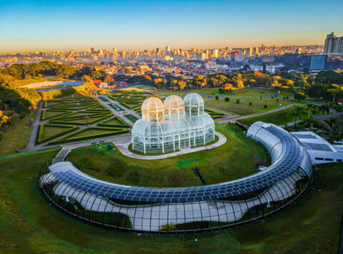
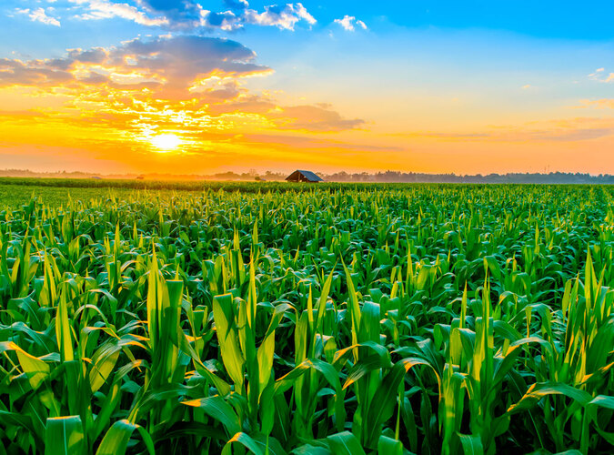
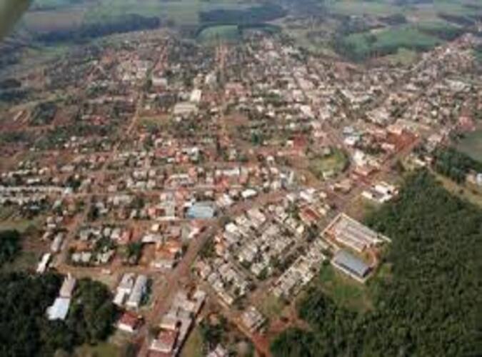

Produção Agrícola
O Paraná alimenta, gera renda e movimenta tecnologia
Soja, milho, café, leite e frango estão entre as atividades que fortalecem o campo, a indústria e o comércio.
Valores ilustrativos para representar a força de cada cadeia produtiva.

Grãos no Paraná
Dado real: o Deral projetou 5,8 milhões de hectares de soja e produção de até 22,3 milhões de toneladas na safra 2024/25.
Impacto: grãos movimentam cooperativas, armazenagem, transporte, portos, agroindústria e empregos no interior.
Plantações do Paraná
Curiosidade: o estado se destaca em grãos e na integração entre agricultura e agroindústria.
Impacto: movimenta transporte, comercio, cooperativas e empregos.

Tecnologia no campo
Exemplos: GPS em máquinas, sensores de solo, drones, previsão climática e aplicativos de gestão rural.
Impacto: a tecnologia ajuda a aplicar água, corretivos e defensivos com mais precisão, reduzindo desperdícios.
Curiosidade: drones, sensores e aplicativos ajudam o produtor a decidir melhor.
Impacto: aumenta produtividade e reduz desperdício de água, energia e insumos.

Agricultura familiar
Importância: pequenas propriedades abastecem feiras, mercados, merenda escolar e cadeias locais de alimentos.
Impacto: fortalece a renda da comunidade, preserva saberes rurais e aproxima campo e cidade.
Curiosidade: muitas famílias produzem alimentos que chegam direto a feiras e escolas.
Impacto: fortalece a renda local e mantém a cultura rural viva.
Brasil e Paraná
Do cenário nacional até a realidade local
Entender o agro brasileiro ajuda a compreender por que o Paraná tem papel tão importante na produção de alimentos, tecnologia e desenvolvimento regional.
Brasil
O agronegócio brasileiro envolve insumos, produção rural, agroindústria e serviços. Em 2024, segundo CEPEA/CNA, o setor respondeu por 23,2% do PIB do país.
Isso significa que o campo influencia empregos, exportações, transporte, pesquisa, alimentação e preços nas cidades.
Paraná
O Paraná se destaca em grãos, leite, carne de frango, suínos, ovos, café, trigo e cooperativismo. O estado também abriga centros de pesquisa importantes, como a Embrapa Soja, em Londrina.
A força paranaense vem da união entre produtores, cooperativas, tecnologia, logística e agroindústrias.
Manoel Ribas
Em Manoel Ribas, a identidade rural aparece na história da comunidade, nas famílias do campo, nas escolas, nas áreas naturais e na relação diária entre produção e preservação.
O desafio local é crescer sem perder as raízes e sem descuidar do solo, da água e da paisagem.
Sustentabilidade
Produzir bem também é preservar
Sustentabilidade no campo significa produzir alimento, gerar renda e, ao mesmo tempo, cuidar do solo, da água, da biodiversidade e da qualidade de vida da população.
Problemas e Soluções
Desafios ambientais pedem inovação e responsabilidade
No Paraná e no Brasil, clima, solo, água, resíduos e conservação ambiental são temas ligados diretamente à produção de alimentos e ao futuro das cidades.